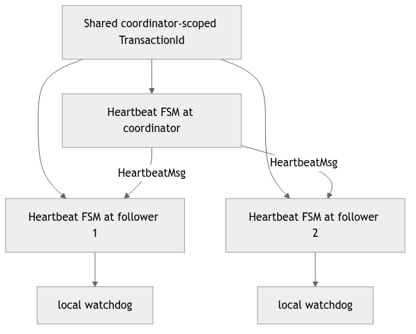
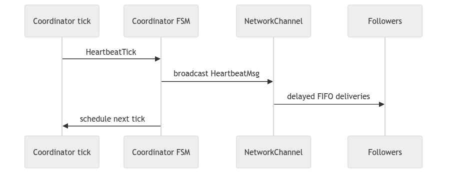
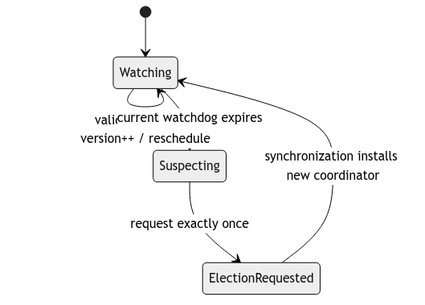
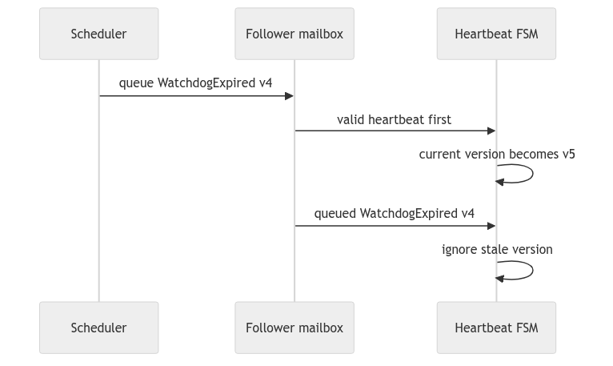
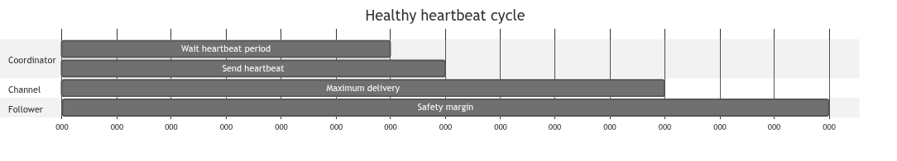
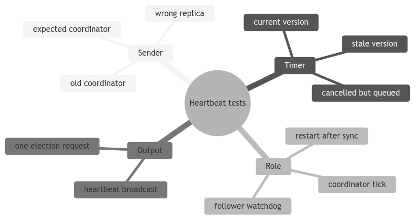

Learning goal. Understand how a quiet system detects a dead coordinator, why every replica owns a local heartbeat FSM, and how stale watchdog messages are prevented from starting false elections.
Implementation base: origin/main at 84846dc.
Election handoff inspected: feature/electionTransaction at d1222a2.
Key files: HeartbeatTransaction.java, Replica.java, heartbeat diagrams and tests.
If clients are actively writing, missing UPDATE or WRITEOK can reveal coordinator failure. But what if nobody sends a write for ten minutes? A dead coordinator would remain unnoticed.
Heartbeat solves this silent-period problem. The coordinator periodically broadcasts “I am alive.” Followers restart a watchdog whenever they receive a valid heartbeat. If a follower’s current watchdog expires, it asks the replica to start an election.
Heartbeat does not replace UPDATE or WRITEOK timeouts. It detects absence of general coordinator liveness, while those timers detect failure at specific update stages.
After InitSystem, every replica constructs a local HeartbeatTransaction. These are separate Java objects with separate state and timers:
They all use the same coordinator-scoped TransactionId:
<coordinator ActorRef, 0>
The shared ID is a correlation key, not a shared object. A heartbeat sent by the coordinator routes to the follower’s own local heartbeat FSM because both represent the same coordinator term.
HeartbeatTickMsgA local scheduler message. It tells the coordinator FSM to emit the next heartbeat. It never crosses NetworkChannel.
HeartbeatMsgA network message broadcast from coordinator to followers. It includes the expected numeric coordinatorId.
WatchdogExpiredMsgA local scheduler message on a follower. It includes watchdogVersion so an old timeout can be identified.
This split makes the system easy to reason about: only HeartbeatMsg is remote evidence; tick and expiry are local clocks.
STOPPED -> COORDINATOR
STOPPED -> WATCHING -> ELECTION_REQUESTED
STOPPED: constructed, not started.COORDINATOR: schedules ticks and broadcasts.WATCHING: follower maintains watchdog.ELECTION_REQUESTED: a current watchdog expired; do not request repeatedly.Repeated start() calls outside STOPPED are ignored, preventing duplicate periodic timer chains.
HeartbeatTransaction.start compares owner replica ID with coordinatorID.COORDINATOR.HeartbeatTickMsg after the configured beat interval.COORDINATOR.HeartbeatMsg to every other replica through delayed FIFO channels.Using repeated one-shot scheduling avoids maintaining a second periodic callback mechanism. Each iteration returns through the actor mailbox.
WATCHING.restartWatchdog increments the version and schedules expiry.Heartbeats received in any other state or naming another coordinator do not reset the watchdog.
The current formula is:
3 * coordinatorBeatInterval + maxLatencyPlusTolerance
The intention is to tolerate several missed opportunities plus one delayed delivery/scheduling allowance. With a 1000 ms beat interval, the follower does not elect after a single heartbeat is late.
The formula is an implementation assumption. To defend it in an exam, relate each term to an actual path and configured network bound. Do not say merely “three seemed safe.”
This is the most important educational detail.
watchdog version 4 scheduled
heartbeat arrives
version 4 timer cancelled
version 5 scheduled
version 4 expiry was already placed in mailbox
If the FSM reacted only to the message class, version 4 could start an election even though a heartbeat just arrived. It therefore compares expired.watchdogVersion with the current field. Mismatch means stale; ignore it.
This pattern is transferable to retries, leases, election attempts, and request generations.
When the current version expires in WATCHING:
ELECTION_REQUESTED first;Replica.startElection(currentCoordinatorID).Changing state first prevents a second queued expiry from triggering another request. Replica.startElection adds further deduplication and a deterministic delayed start based on ring distance.
On origin/main, this handoff was a TODO. The current election branch replaces it with the concrete call, so report provenance matters.
Synchronization updates coordinatorID and epoch, removes the old heartbeat transaction from active routing, constructs a new local FSM with the new coordinator’s ActorRef and sequence zero, and starts the correct role.
Old queued tick/expiry messages carry the old coordinator-scoped transaction ID. Because the old FSM is no longer active, they are dropped by dispatch. A new coordinator ActorRef also changes the ID.
The FSM checks numeric coordinator ID but the inspected handleHeartbeat does not independently compare heartbeat.sender with the membership ActorRef for that coordinator. In the trusted course model, messages are not Byzantine, but sender validation still makes stale/malformed input behavior clearer.
A follower already in ELECTION_REQUESTED ignores heartbeats. Recovery must install a new heartbeat transaction rather than trying to revive the old term.
Current regression tests show:
Important missing focused tests include:
Why not create one shared HeartbeatTransaction object? Actor state cannot be shared mutably. Each replica needs its own role and timer, while a shared ID correlates their messages.
Why is cancel plus version needed? Cancel may fail to remove an event already queued. Version validation decides whether the event is still current at handling time.
The invariant to remember is: only a current follower watchdog for the currently expected coordinator may trigger one election request.
Follower local FSM Coordinator
| |
|-- schedule heartbeat tick ------------> |
| |
|<----------- HeartbeatMsg ---------------|
| reset watchdog(version=7) |
| X silent/crashed
| watchdog(version=7) expires |
| validate expected coordinator + version |
| request ElectionTransaction |
There is one HeartbeatTransaction object per replica, not one globally
shared object. The coordinator instance sends heartbeats; follower instances
maintain watchdogs. They share a coordinator-scoped TransactionId so routing
can identify the term, while their timers and state remain actor-local.
Consider this event order: watchdog v6 is scheduled; a heartbeat arrives and installs v7; cancellation of v6 races with the scheduler; v6 is delivered to the mailbox. A boolean “watchdog exists” is insufficient because v6 and v7 are both real queued events. The handler must compare the event’s version with the current field and ignore v6.
onHeartbeat(msg):
if (msg.sender() != expectedCoordinator) return;
watchdogVersion++;
cancel(oldTimeout);
timeout = schedule(WatchdogExpired(watchdogVersion));
onWatchdogExpired(expired):
if (expired.version() != watchdogVersion) return; // stale event
requestElectionOnce();
This is a general asynchronous-programming pattern: cancellation is an optimization; validation at consumption time is the correctness mechanism.
With heartbeat period H and channel delay bound L, a timeout near H can
fire during a healthy delayed delivery. Add scheduler jitter and processing
time when choosing the safety margin. Conversely, an enormous timeout delays
election after a genuine crash. Explain the chosen bound in terms of the
configuration, then test it with deterministic delay values rather than relying
on one lucky random run.
Write a test where a wrong sender sends a heartbeat, then the real coordinator sends one. The wrong message must not reset the timer. Add a second test that delivers an old watchdog version after a fresh heartbeat and proves no duplicate election request is emitted.

Shared identity lets corresponding local FSMs route the same protocol term. It does not imply shared mutable state. Each follower owns its timer and version; the coordinator owns its periodic tick. Creating a separate arbitrary ID on every replica would prevent incoming heartbeat messages from finding the local FSM.
At initialization, verify that every replica installs one heartbeat FSM with the coordinator-scoped ID and then chooses its local role from coordinator identity.

The tick is local and should not travel through NetworkChannel. The heartbeat
message is remote and must use it. Separating the two message types prevents a
follower from accidentally handling a coordinator’s scheduling instruction.
After a simulated coordinator crash, queued ticks may still arrive. The crash guard and role/state checks must stop new broadcasts. Otherwise, a logically dead coordinator keeps followers alive.

Only heartbeats from the expected coordinator reset the watchdog. A stale old coordinator or arbitrary replica must not suppress detection. On expiry, the FSM validates current version and role, then transfers responsibility to the election subsystem once.
Synchronization must restart heartbeat with the newly elected coordinator and invalidate old timers. Carrying the old role into a new term can make two coordinators broadcast or make the new coordinator monitor itself.

Cancellation is best effort because the scheduler may already have delivered to the mailbox. Comparing the payload version at handling time closes this race. Nulling a timer handle does not identify which queued event fired.
Use the same reasoning for repeated restarts: each generation must be greater than all events created by the previous coordinator role.

The watchdog must exceed heartbeat period plus worst configured delivery and reasonable scheduler margin. Derive this from constants used by the fixture. A test with zero delay cannot validate the production bound.
False suspicion is excluded by the assignment’s assumptions, but the implementation still needs constants consistent with that assumption. If healthy configured delays exceed the watchdog, the model violates itself.

For every leaf, define the initial role, ID, version, incoming sender, and expected callback/message count. Include negative assertions: no watchdog reset for wrong sender and no second election request for repeated stale expiries.